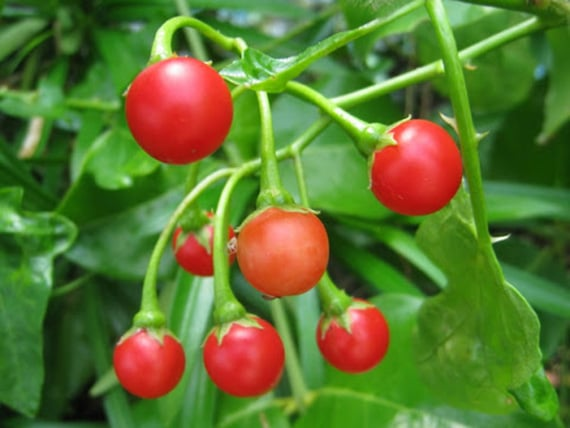
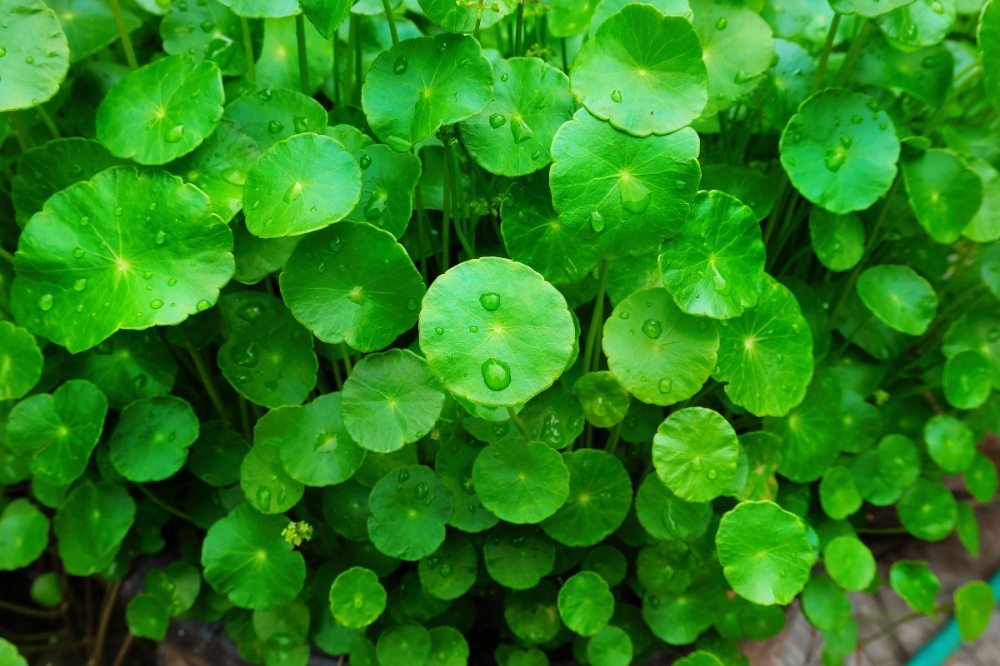
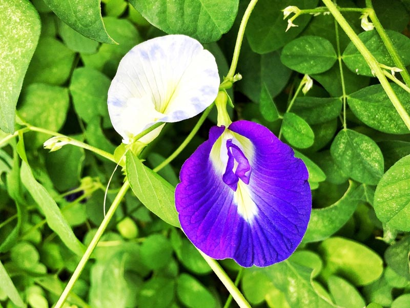

ประเภทไม้เถา

มะแว้งเครือ
ไม้เถาเลื้อยพาดพันกับต้นไม้อื่น ลำต้นกลม สีเขียวเป็นมัน มีหนามแหลมตามกิ่งก้าน ใบ เป็นใบเดี่ยว ออกเรียงสลับ
สีเขียวเป็นมัน แผ่นใบล่างมีหนามตามเส้นใบ ดอก ออกเป็นช่อตามซอกใบที่ปลายกิ่ง ดอกสีม่วง กลีบเลี้ยงมี 5 กลีบ
กลีบดอกมี 5 แฉก ย่น ปลายแหลม โคนเชื่อมติดกัน เกสรเพศผู้สีเหลืองมี 5 อัน ผล
รูปทรงกลม ขนาด 0.5 ซม. ผิวเรียบ ผลดิบสีเขียวมีลายขาว ผลสุกสีแดงใส เมล็ดแบน มีจำนวนมาก
สรรพคุณ :
- ราก : แก้โลหิตออกทางทวารหนัก ทวารเบา แก้ไอ แก้ขับเสมหะให้ตก แก้หืด ขับปัสสาวะ แก้ไข้สันนิบาต บำรุงธาตุ แก้น้ำลายเหนียว กระหายน้ำ แก้วัณโรค
- ทั้งต้น : ขับเหงื่อ แก้ไอ แก้หืด ขับปัสสาวะ
- ต้น : แก้หญิงท้องขึ้นในขณะมีครรภ์ แก้ไอ ขับเสมหะ แก้น้ำลายเหนียว กระทุ้งพิษไข้ ขับปัสสาวะ
- ใบ : บำรุงธาตุ แก้ไอ แก้น้ำลายเหนียว
- ผลสด : แก้ไอ ขับเสมหะ ขับปัสสาวะ รักษาโรคเบาหวาน บำรุงดี แก้น้ำลายเหนียว บำรุงเลือด แก้โลหิตออกทางทวารหนักทวารเบา

บัวบก
ไม้ล้มลุก อยู่ในจำพวกผัก ประเภทเลื้อย มีลำต้นเลื้อยไปตามดินที่ชื้นแฉะ เรียกว่า ไหล มีรากงอกออกตามข้อของลำต้น
ใบ เป็นใบเดี่ยว ออกเรียงสลับ ใบงอกเป็นกระจุกออกจากข้อ ข้อละ 2-10 ใบ ลักษณะใบรูปไต รูปร่างกลม ฐานใบโค้งเว้าเข้าหากัน ขอบเป็นคลื่นหยักเล็กน้อย แผ่นใบสีเขียวมีขนเล็กน้อย ก้านใบสีเขียวยาว
ดอก ออกดอกเป็นช่อแบบช่อซี่ร่มตามซอกใบ มีประมาณ 2-5 ช่อ ช่อหนึ่งมีดอกย่อยประมาณ 4-5 ดอก ดอกมีขนาดเล็ก กลีบดอกมี 5 กลีบ สีม่วงเข้มอมแดงสลับกัน ก้านช่อดอกจะมีความยาวประมาณ 0.5-5 ซม. ริ้วประดับจะมีประมาณ 2-3 ใบ เกสรตัวผู้นั้นจะสั้น
ผล เป็นผลแห้งแตก ลักษณะแบน มีเส้นผ่าศูนย์กลางยาวประมาณ 3-4 มม. เมล็ดสีดำ
สรรพคุณ :
- ใบ : รสขมเย็น เป็นยาดับร้อน ลดอาการอักเสบบวม แก้ปวดท้อง แก้ดีซ่าน แก้บิด ใบสดต้มกับน้ำซาวข้าวดื่มแก้นิ่วในระบบทางเดินปัสสาวะ มีสาร Asiaticoside ทำยาทาแก้แผลโรคเรื้อน
- ทั้งต้น : รสหอมเย็น บำรุงหัวใจ บำรุงกำลัง แก้ช้ำใน แก้อ่อนเพลีย ขับปัสสาวะ รักษาบาดแผล แก้ร้อนในกระหายน้ำ แก้โรคปวดศีรษะข้างเดียว (ไมเกรน) แก้โรคเรื้อน แก้กามโรค แก้ตับอักเสบ
- ต้น : เป็นยำบำรุงกำลัง บำรุงหัวใจ แก้อ่อนเพลีย เมื่อยล้า รักษาแผลไฟไหม้ น้ำร้อนลวก หรือมีการชอกช้ำจากการกระแทก แก้พิษงูกัด ปวดศีรษะข้างเดียว ขับปัสสาวะ แก้เจ็บคอ เป็นยาห้ามเลือด ส่าแผลสด แก้โรคผิวหนัง ลดความดัน แก้ช้ำใน
- เมล็ด : รสขมเย็น เป็นยาดับร้อน ลดอาการอักเสบบวม แก้ปวดท้อง แก้ดีซ่าน แก้บิด ใบสดต้มกับน้ำซาวข้าวดื่มแก้นิ่วในระบบทางเดินปัสสาวะ มีสาร Asiaticoside ทำยาทาแก้แผลโรคเรื้อน

อัญชัน
ไม้ล้มลุกเลื้อยพัน ยาว 1-5 เมตร ใบประกอบแบบขนนก เรียงสลับ ใบย่อย 3-9 ใบ รูปรีแกมขอบขนานหรือรูปรีแกมไข่กลับ กว้าง 1-3 ซม. ยาว 2-5 ซม. ดอกเดี่ยว ออกที่ซอกใบ กลีบดอกรูปดอกถั่ว สีน้ำเงิน ม่วงหรือขาว ตรงกลางกลีบสีเหลืองหม่นขอบสีขาว ผลเป็นฝัก รูปดาบ โค้งเล็กน้อย ปลายเป็นจะงอย แตกเป็น 2 ฝา เมล็ดรูปไต จำนวน 6-10 เมล็ด
สรรพคุณ :
- ดอก : ใช้กลีบดอกสด ตำเติมน้ำเล็กน้อย กรองด้วยผ้าขาวบาง คั้นเอาน้ำออก จะได้น้ำสีน้ำเงิน (Anthocyanin) ใช้เป็น indicator แทน lithmus
ถ้าเติมน้ำมะนาวลงไปเล็กน้อย จะกลายเป็นสีม่วง ใช้แต่งสีอาหารตามต้องการ มักนิยมใช้แต่งสีน้ำเงินของขนมเรไร ขนมน้ำดอกไม้ ขนมขี้หนู
- ราก : ใช้เป็นยาขับปัสสาวะ ยาระบาย